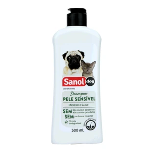

Shampoo Neutro para Pets

- Preço
- R$ 45,90
- Marca
- Sanol
- Peso
- 500 ml
- Indicação
- Gatos e Cachorros
- Cuidados
- Durante a aplicação do shampoo Sanol, deve-se ficar atento aos ouvidos do seu bichinho. O ideal é que sejam colocados algodões para dar mais conforto e assim evitar que entre água e cause problemas maiores. Não se deve esquecer de proteger o focinho e também os olhos contra irritações
- Composição
- Água, Lauril Éter Sulfato de Sódio, Cocoamidopropil Betaína, Cocamide DEA, Poliquatérnio 7, Conservante, EDTA Dissódico, Cloreto de Sódio, Fragrância, Poliquatérnio 39